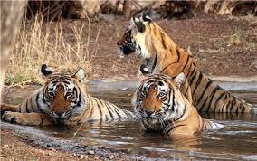

Sprawling over a vast area of almost 635 sq. kms, Kinnersani Wildlife Sanctuary is situated in the Khammam district of Telangana. Nestled amidst the Dandakaranya Forest, the sanctuary is flanked by river Godavari on one side. Besides the variety of endangered flora, it is also home to umpteen species of Chousinghas, Sambar, Wild Boars, Gaurs, Chinkara, Cheetals, Hyenas, Sloth Bears etc. With suitable temperature and a pleasant climate, several species live here in tune with nature. In addition to the nature lovers, the region is also a popular hot spot among birdwatchers and photographers.
|

|